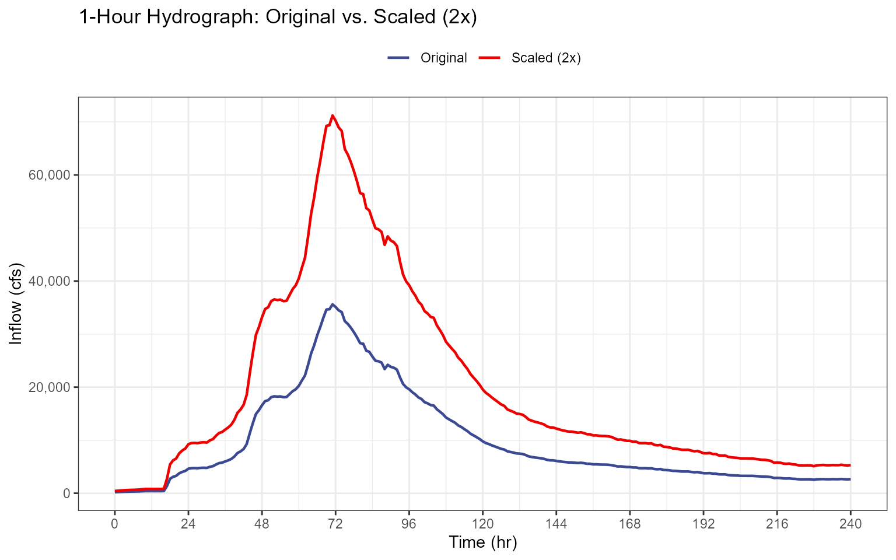
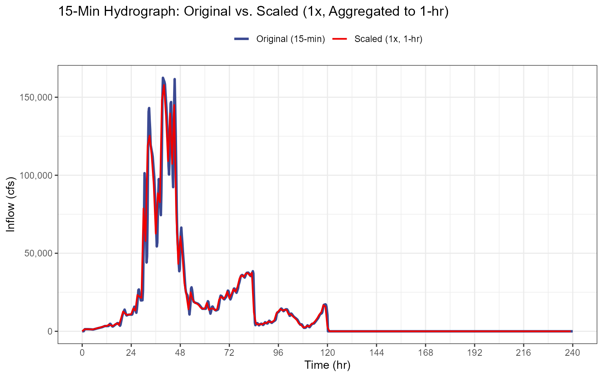

Hydrograph Scaling Validation
Source:vignettes/validation-hydrograph_scaling.Rmd
validation-hydrograph_scaling.RmdPurpose
Validate that scale_hydrograph() correctly scales inflow
hydrographs and converts between timesteps. This test covers three
cases:
- 1-hour input, 1-hour routing — Verify that the scale factor is applied correctly and output dimensions are preserved.
- 15-minute input, 1-hour routing — Verify that block averaging produces the correct timestep, row count, and ordinate values.
- Edge cases — Verify behavior with a scale factor of 1 and non-negative flow output.
Setup
hydrographs <- hydrograph_setup(jmd_hydro_apr1999,
jmd_hydro_jun1921,
jmd_hydro_jun1965,
jmd_hydro_jun1965_15min,
jmd_hydro_may1955,
jmd_hydro_pmf,
jmd_hydro_sdf,
critical_duration = 2,
routing_days = 10)
hydro_1hr <- hydrographs[[1]]
hydro_15min <- hydrographs[[4]]
obs_vol <- attr(hydro_1hr, "obs_vol")
obs_vol_15 <- attr(hydro_15min, "obs_vol")
sampled_vol_2x <- obs_vol * 2
sampled_vol_15_2x <- obs_vol_15 * 2| Hydrograph | Timestep (hr) | Rows | Observed Volume |
|---|---|---|---|
| April 1999 (1-hr) | 1.00 | 241 | 25313.96 |
| June 1965 (15-min) | 0.25 | 961 | 53445.41 |
Test 1: 1-Hour Input, 1-Hour Routing
Scale the April 1999 hydrograph by a factor of 2 with matching input and routing timesteps (1-hour).
scaled_1hr <- scale_hydrograph(
hydrograph_shape = hydro_1hr[, c("hour", "inflow")],
observed_volume = obs_vol,
sampled_volume = sampled_vol_2x,
routing_dt = 1)| Check | Result |
|---|---|
| Output class is data.frame | TRUE |
| Column names correct | TRUE |
| Time starts at 0 | TRUE |
| Row count preserved | TRUE |
| Scale factor applied (all ordinates doubled) | TRUE |

Test 2: 15-Minute Input, 1-Hour Routing (Block Average)
Scale the June 1965 (15-min) hydrograph by a factor of 1 with block averaging to 1-hour routing timestep.
scaled_15min <- scale_hydrograph(
hydrograph_shape = hydro_15min[, c("hour", "inflow")],
observed_volume = obs_vol_15,
sampled_volume = obs_vol_15,
routing_dt = 1)
expected_rows <- floor(nrow(hydro_15min) / 4)
dt_out <- scaled_15min$time_hrs[2] - scaled_15min$time_hrs[1]
expected_first <- mean(hydro_15min$inflow[1:4]) * 1| Check | Expected | Actual | Pass |
|---|---|---|---|
| Row count (15-min to 1-hr, factor of 4 reduction) | 240 | 240 | TRUE |
| Output timestep is 1 hour | 1 | 1 | TRUE |
| Time starts at 0 | 0 | 0 | TRUE |
| First ordinate matches manual block average × scale | 36.5 | 36.5 | TRUE |

Test 3: Edge Cases
Unity scaling
(sampled_volume = obs_vol) verifies that when the sampled
flood volume exactly matches the observed hydrograph volume, the scaling
operation is a no-op — the output ordinates are identical to the input
within floating point tolerance. This is an important baseline check:
any scaling implementation that distorts the hydrograph shape when the
scale factor is 1.0 has a fundamental error.
Non-negative flows verifies that the scaled hydrograph contains no negative inflow values. This can be a non-trivial failure mode when the scaling procedure involves interpolation, baseline correction, or any arithmetic that operates on near-zero recession limb ordinates. Negative inflows are physically meaningless and would corrupt the Modified Puls routing by implying water is being withdrawn from the reservoir by the inflow boundary condition.
# Scale factor = 1 (same volume)
scaled_unity <- scale_hydrograph(
hydrograph_shape = hydro_1hr[, c("hour", "inflow")],
observed_volume = obs_vol,
sampled_volume = obs_vol,
routing_dt = 1
)
unity_match <- isTRUE(all.equal(scaled_unity$inflow_cfs, hydro_1hr$inflow, tolerance = 1e-10))
# Non-negative flows
scaled_2x <- scale_hydrograph(
hydrograph_shape = hydro_1hr[, c("hour", "inflow")],
observed_volume = obs_vol,
sampled_volume = sampled_vol_2x,
routing_dt = 1
)
all_nonneg <- all(scaled_2x$inflow_cfs >= 0)| Check | Result |
|---|---|
| Scale factor = 1 returns unchanged ordinates | TRUE |
| All flows non-negative for positive scale factor | TRUE |